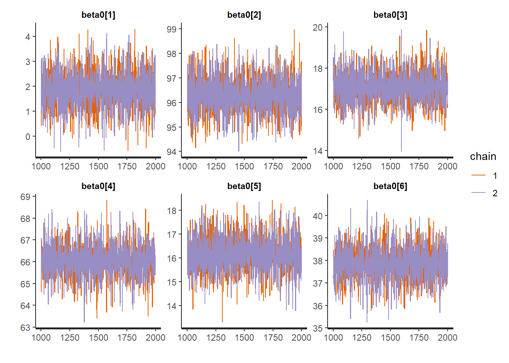
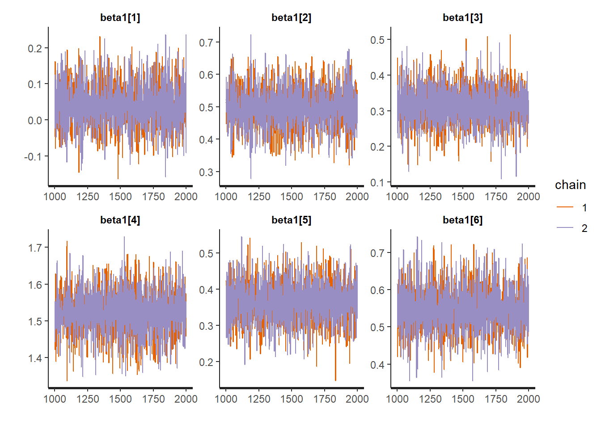
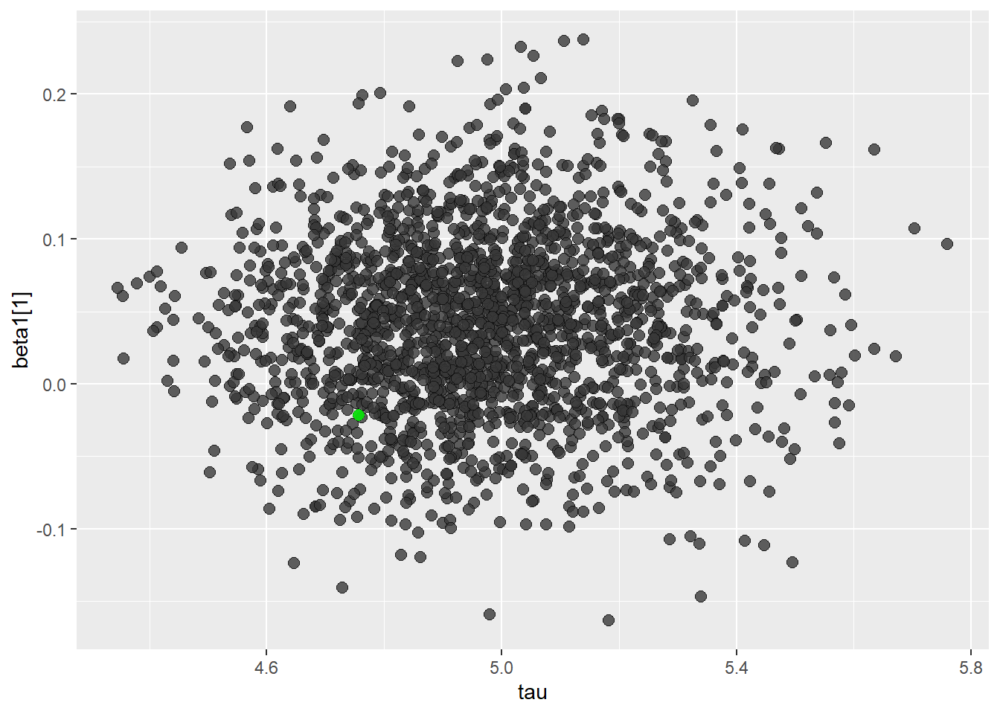

This is an example taken from Jeff Gill’s Bayesian Methods: A Social and Behavioural Sciences Approach (Gill 2008). I wanted to re-implment the existing BUGS code into Stan and see if I could arrive at the same results.
The example in the book utilises data from the US Department of Commerce’s Survey of Current Business. The data contain information by quarter from 1979 to 1989. After some hunting I found that Dr Gill graciously put the data to this book in the BaM package which I subsequently downloaded from CRAN.
data_sales <- BaM::retail.salesAnd we can inspect it a little more:
data_salesTo describe the data further:
In the case of the model for the data it is specified as
\[y_{i,j} \sim N(\beta_0[i]+\beta_1[i]x_j, \tau)\] \[\beta_0[i] \sim N(\mu_{\beta.0},\tau_{\beta.0})\] \[\beta_1[i] \sim N(\mu_{\beta.1},\tau_{\beta.1})\] \[\tau\sim\Gamma(0.01, 0.01)\]
To implement the above model we would need to do the following:
// Normal Normal Model
data {
int<lower=0> J; // number of data items
int<lower=0> I; // number of predictors
vector[J] x; // depdent variable
matrix[J, I] y; // predictor matrix
}
parameters {
vector[I] beta0; //vector of beta0s
vector[I] beta1; //vector of beta1s
real mu_beta0; //average value of beta0
real mu_beta1; //average value of beta1
real tau;
real tau_beta1;
real tau_beta0;
}
transformed parameters{
real xbar;
xbar = mean(x); // calculate the average value of x
}
model {
// priors
tau ~ gamma(.01, .01);
mu_beta0 ~ normal(0, 10);
tau_beta0 ~ gamma( .01, .01);
mu_beta1 ~ normal(0, 10);
tau_beta1 ~ gamma( .01, .01);
//group effects for each indicator
for(i in 1:I){
beta0[i] ~ normal(mu_beta0, tau_beta0);
beta1[i] ~ normal(mu_beta1, tau_beta1);
}
//model
for(j in 1:J){
y[j]~ normal(beta0 + beta1*(x[j]-xbar), tau);
}
}
Now we can make sure that the model compiles.
library(rstan)
rstan_options(auto_write = TRUE)
nn_fit <- stan_model("stan_hlm_nn.stan")Format our data for the modelL
data <- list(J = nrow(data_sales),
I = 6L,
x = data_sales$TIME,
y = as.matrix(data_sales[,-1])/1000)And fit our model:
fit <- sampling(nn_fit, data = data, chains = 2, iter = 2000, refresh = 0)Looking at the output from our model it matches that on page 405 in the second edition almost right on! Hooray!
print(fit, probs = c(0.025, 0.5, 0.975))## Inference for Stan model: stan_hlm_nn.
## 2 chains, each with iter=2000; warmup=1000; thin=1;
## post-warmup draws per chain=1000, total post-warmup draws=2000.
##
## mean se_mean sd 2.5% 50% 98% n_eff Rhat
## beta0[1] 1.86 0.02 0.75 0.34 1.85 3.32 2144 1
## beta0[2] 96.33 0.02 0.75 94.81 96.34 97.84 2387 1
## beta0[3] 17.09 0.02 0.79 15.59 17.08 18.63 2342 1
## beta0[4] 66.06 0.02 0.75 64.57 66.04 67.57 2446 1
## beta0[5] 16.18 0.01 0.75 14.75 16.16 17.72 2662 1
## beta0[6] 37.88 0.01 0.75 36.40 37.88 39.36 2652 1
## beta1[1] 0.04 0.00 0.06 -0.08 0.04 0.16 2127 1
## beta1[2] 0.50 0.00 0.06 0.37 0.50 0.62 2754 1
## beta1[3] 0.32 0.00 0.05 0.21 0.32 0.42 2315 1
## beta1[4] 1.52 0.00 0.06 1.40 1.52 1.64 2489 1
## beta1[5] 0.37 0.00 0.06 0.25 0.37 0.48 2407 1
## beta1[6] 0.55 0.00 0.06 0.43 0.55 0.68 2540 1
## mu_beta0 9.66 0.21 9.92 -9.79 9.78 28.89 2259 1
## mu_beta1 0.55 0.01 0.27 0.04 0.55 1.10 1890 1
## tau 4.97 0.00 0.22 4.56 4.96 5.44 2401 1
## tau_beta1 0.62 0.02 0.30 0.31 0.55 1.35 359 1
## tau_beta0 48.00 0.51 16.72 25.95 44.68 89.76 1086 1
## xbar 22.50 NaN 0.00 22.50 22.50 22.50 NaN NaN
## lp__ -587.03 0.13 3.35 -594.79 -586.69 -581.76 697 1
##
## Samples were drawn using NUTS(diag_e) at Thu Jun 20 10:38:16 2019.
## For each parameter, n_eff is a crude measure of effective sample size,
## and Rhat is the potential scale reduction factor on split chains (at
## convergence, Rhat=1).Thus we refit this model in Stan, but let’s check the trace plots and some posterior predictive checks to make sure we have a model that makes sense.
traceplot(fit, "beta0")
traceplot(fit, "beta1")
library(bayesplot)
posterior <- as.array(fit)
mcmc_areas(posterior,
pars = c("beta1[1]","beta1[2]","beta1[3]","beta1[4]","beta1[5]","beta1[6]"),
prob = 0.8)posterior2 <- extract(fit, inc_warmup = TRUE, permuted = FALSE)color_scheme_set("darkgray")
mcmc_scatter(
as.matrix(fit),
pars = c("tau", "beta1[1]"),
np = nuts_params(fit),
np_style = scatter_style_np(div_color = "green", div_alpha = 0.8)
)
Gill, Jeff. 2008. Bayesian Methods: A Social and Behavioral Sciences Approach. 2nd ed. CRC Press; CRC Press. http://www.crcpress.com/product/isbn/9781584885627.
Research and Methods Resources
me.dewitt.jr@gmail.com
Winston- Salem, NC
Copyright © 2018 Michael DeWitt. All rights reserved.